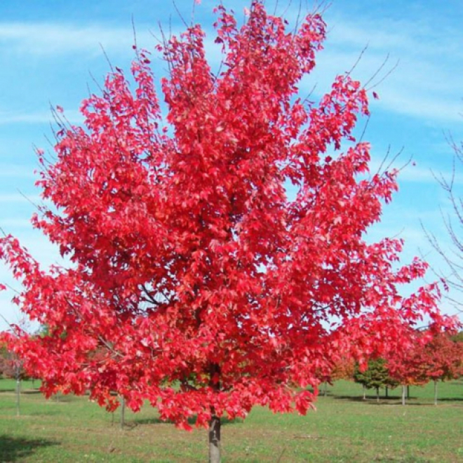
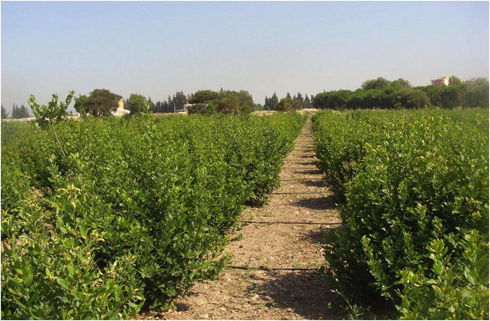

- გვარი: Pinus
- ოჯახი: Pinaceae
- სახეობები: 120-ზე მეტი სახეობა
- გავრცელება: ევროპა, აზია, ჩრდილოეთ ამერიკა, კავკასია
- მახასიათებლები: გრძელწიწვიანი, გირჩებით მრავლდება, სიმაღლე ზოგჯერ 80 მეტრს აღწევს
- გამოყენება: ხის მასალა, ფისი, ეთერზეთები, დეკორატიული და ეკოლოგიური მნიშვნელობა
- სიმბოლიკა: სიძლიერე, გამძლეობა, სიცოცხლის ხანგრძლივობა

- გვარი: Acer
- ოჯახი: Sapindaceae
- სახეობები: დაახლოებით 130–200
- გავრცელება: ზომიერი კლიმატის რეგიონები — ევროპა, აზია, ჩრდილოეთ ამერიკა
- გამოყენება: დეკორატიული ხე, მეპლის სიროფის წარმოება (Acer saccharum), მყარი ხე ავეჯსა და იატაკში
- სიმბოლიკა: სიძლიერე, გამძლეობა, შემოდგომის სილამაზე

🌿 ძირითადი ინფორმაცია
- სიმაღლე: იზრდება 2–10 მეტრამდე, გარემო პირობების მიხედვით.
- ხანგრძლივობა: შეუძლია იცოცხლოს 120–150 წელი.
- ფოთლები: მუქი მწვანე, სურნელოვანი, ფართოდ გამოიყენება როგორც სანელებელი (კულინარიაში „დაფნის ფოთოლი“).
- გამოყენება:
- ეთერზეთების წარმოებაში
- სამკურნალო საშუალებებში
- დეკორატიული და ქარსაფარი მცენარე
- ისტორია: დასავლეთ საქართველოში დაფნა ცნობილია ჯერ კიდევ ჩვენს წელთაღრიცხვამდე, ხოლო სამრეწველო მასშტაბით
გავრცელდა XX საუკუნის 60-იან წლებში.